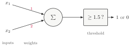
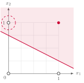
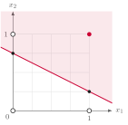
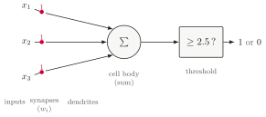
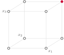
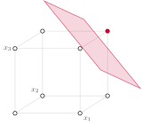
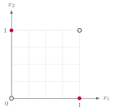

NJIT · CS 301 · INTRODUCTION TO DATA SCIENCE · FALL 2026 PDF
Meeting 2. Putting the Line Where It Belongs
Act 1 Gates by Hand · Act 2 More Than Two Inputs · Act 3 The Linear Score
Meeting 1 ended on a unit whose weights and threshold were simply handed to you: \(w = (2, -1, 2)\), \(\theta = 3\), and the only question was whether it fired. This meeting turns that around. You choose the numbers. The tool for choosing them is a picture — the unit’s inputs as points, its decision as a line — and the picture is so useful that the whole meeting is spent learning what it shows, watching it run out of room, and then writing down the notation that takes over where the picture stops. The order is deliberate: first the work, then the notation the work turns out to need.
Act 1. Gates by Hand
1.1 Last meeting’s unit, with numbers in it
Take the two-input version of the unit and put numbers in it: weights \(w_1 = 1\) and \(w_2 = 2\), threshold \(\theta = 1.5\).

Feed it the four rows of the AND table and see what comes out. The sum for an input \((x_1, x_2)\) is \(1\cdot x_1 + 2\cdot x_2\), and the unit fires when that sum is at least \(1.5\):
| \(x_1\) | \(x_2\) | sum | fires? | AND |
|---|---|---|---|---|
| 0 | 0 | 0 | 0 | 0 |
| 0 | 1 | 2 | 1 | 0 |
| 1 | 0 | 1 | 0 | 0 |
| 1 | 1 | 3 | 1 | 1 |
Three rows out of four are right. The unit fires on \((0,1)\), where AND says \(0\): the second input alone, with its weight of \(2\), is enough to push the sum past \(1.5\). This near miss is the meeting’s starting point on purpose. A unit that is wrong everywhere invites a fresh guess; a unit that is wrong at exactly one corner invites reasoning — about which way to move something, and by how much. To reason about it, you need to see what the numbers are doing.
1.2 What the picture is showing
Here is the same unit as a picture.

Take it slowly; the rest of the meeting is built on it.
- Each of the four inputs is a point on the unit square: \((0,0)\), \((0,1)\), \((1,0)\) and \((1,1)\) — the four corners.
- A filled corner means the gate should answer \(1\) there; an open corner means it should answer \(0\). For AND, only \((1,1)\) is filled.
- The shaded side is where the unit fires — where \(w_1x_1 + w_2x_2\) has reached the threshold. Its edge is a straight line.
- So the weights and the threshold do one single thing: they place a line, and the unit’s answer for any input is which side of the line the input lands on.
Read the failure off the picture. The corner \((0,1)\), ringed, sits on the shaded side, and it should not. The line is too low on the left. That sentence — too low on the left — is a statement about where to move the line, and it is more than the table gave you.
1.3 Where that line came from
The boundary is where the sum equals the threshold:
Solve for \(x_2\) and it is a line like any other:
Two points are enough to draw it: at \(x_1 = 0\) the line passes through \(x_2 = 0.75\), and at \(x_1 = 1\) through \(x_2 = 0.25\).

The conversion is worth doing once by hand, because it is the bridge between two ways of seeing the same unit: as three numbers, and as a line. Move the threshold and the line slides; change a weight and it tilts. Every choice you make in the numbers is a move in the picture.
One case the rearrangement does not cover. If \(w_2 = 0\) the boundary is a vertical line, \(x_1 = \theta/w_1\), and “solve for \(x_2\)” is undefined — the line exists, this particular way of writing it does not produce it. The worked unit keeps \(w_2 \neq 0\) on purpose.
Example 1.1 Make it right
This is the first task of the meeting’s sheet: find \(w_1\), \(w_2\) and \(\theta\) so that the unit answers AND on all four rows — and then, in a sentence or two, write down how you decided. What did you look at first, and what made you change it?
There is no single answer, and two routes are worth seeing side by side. The first keeps the weights \((1, 2)\) and raises the threshold: push \(\theta\) past \(2\), say to \(2.5\), and the line moves away from the origin, parallel to itself, until \((0,1)\) falls off the firing side. Check the four rows: sums \(0, 2, 1, 3\) against \(2.5\) give \(0, 0, 0, 1\) — AND. The second starts over with equal weights, \(w_1 = w_2 = 1\) and \(\theta = 1.5\): the sums are \(0, 1, 1, 2\), and only the last reaches \(1.5\) — AND again, with a line that runs diagonally between \((1,1)\) and the other three corners.
Both are correct, and so are infinitely many others. There is no the setting for AND; there is a whole region of settings that work, and any point in that region does the job. A gate has one truth table; the unit that reproduces it has infinitely many valid settings.
1.4 Keep what you wrote down
The second half of the task — the sentence about how you decided — is not a warm-up, and it is not spent when the meeting ends. Look at what the two routes of Example 1.1 actually are. One says: I saw which corner was on the wrong side and moved the line toward it. The other says: I tried numbers until the table came out right. Those are two different procedures, and both of them worked.
You just ran a search by hand.
Keep the sheet. What you wrote on it is the thing to look at again when the question comes up of whether something other than a person could follow the same procedure.
Act 2. More Than Two Inputs
2.1 A gate with three inputs
Nothing in the unit says “two.” Give it three inputs, three weights, and ask it for the AND of three inputs: answer \(1\) only when all three are \(1\).

Eight rows in the table now instead of four — but the unit is the one you already have, one weight longer, and the arithmetic has not changed.
Example 2.1 Eight rows
With \(w = (1, 1, 1)\) the sum is simply the number of inputs that are \(1\), so the eight rows can be checked at a glance: the sum is \(0\) for one row, \(1\) for three rows, \(2\) for three rows, and \(3\) for the row \((1,1,1)\) alone. Against \(\theta = 2.5\), only that last row fires.
| \(x_1\) | \(x_2\) | \(x_3\) | sum | fires? |
|---|---|---|---|---|
| 0 | 0 | 0 | 0 | 0 |
| 0 | 0 | 1 | 1 | 0 |
| 0 | 1 | 0 | 1 | 0 |
| 0 | 1 | 1 | 2 | 0 |
| 1 | 0 | 0 | 1 | 0 |
| 1 | 0 | 1 | 2 | 0 |
| 1 | 1 | 0 | 2 | 0 |
| 1 | 1 | 1 | 3 | 1 |
The threshold could be anything strictly between \(2\) and \(3\); \(2.5\) is the middle of that range, which is a good habit — it leaves the most room on both sides.
2.2 Eight rows, eight corners
Two inputs gave a square with four corners. Three give a cube with eight, and only \((1,1,1)\) is filled: only there should the unit fire.

And the boundary? Where the sum equals the threshold is now \(x_1 + x_2 + x_3 = 2.5\), and that is not a line but a plane — drawn here as a patch, cutting off the one corner that fires.

The plane does everything the line did: it splits the space in two, and the answer is which side you are on. One corner above, seven below.
2.3 Same object, one dimension up
Line up the two cases, and the case after them:
| two inputs | three inputs | four, or forty |
| a point on a square | a point in a cube | a point … somewhere |
| \(w_1x_1 + w_2x_2\) | \(w_1x_1 + w_2x_2 + w_3x_3\) | \(w_1x_1 + \cdots + w_nx_n\) |
| split by a line | split by a plane | split by ? |
The arithmetic extends to any number of inputs without changing shape. The picture does not: at four inputs there is no square and no cube, and no page to draw on. The thing that splits the space is still there — it has a name, a hyperplane, and it behaves like the line and the plane in every way that matters — but you cannot see it.
2.4 Two inputs was the small case
It would be convenient if two or three inputs were the normal case and forty the exotic one. It is the other way round.
- Measurements rarely arrive one or two at a time. A day of weather is a high temperature and a low one and a humidity and a pressure — four numbers describing one day. There is no square to put that on, and no cube either.
- The cell of meeting 1 was never working with two inputs. A cortical neuron collects from thousands of synapses at once.
So the picture cannot serve as the general tool. Its role was to show what the tool has to do — divide the space, and report the side — and it has done that. What is needed now is a way to write the unit that works in forty dimensions as easily as in two.
The arithmetic still works in forty dimensions.
Writing it out longhand does not.
\(w_1x_1 + w_2x_2 + w_3x_3 + w_4x_4 + w_5x_5 + \cdots\) — at forty inputs, this has forty terms, and every statement about the unit has to drag them along. Act 3 fixes that.
Act 3. The Linear Score
3.1 Write it once
The sum, in full and in the shorthand from meeting 1:
Now collect the weights into one object, \(\mathbf{w} = (w_1, \ldots, w_n)\), and the inputs into another, \(\mathbf{x} = (x_1, \ldots, x_n)\) — two vectors, each a list of \(n\) numbers. Then the whole sum has a name and a symbol:
Also called the dot product. It takes two lists of \(n\) numbers and returns one number — multiply the lists entry by entry, add up the products — and it looks the same whether \(n\) is two or forty. This is the whole notation: two symbols for two lists, and a dot between them.
3.2 One number, and it is the score
\(\mathbf{w}\cdot\mathbf{x}\) is the score the unit computes for an input, and it is worth reading as a quantity, not only as a thing to compare with \(\theta\). A large positive score means the input is well inside the firing side, far from the line. A large negative score means well outside. A score near zero means near the boundary — the picture’s line is exactly the set of inputs whose score equals the threshold. The threshold is just where the score is cut.
It is tidier to put the threshold on the same side of the comparison as everything else. Write \(b = -\theta\):
\(b\) is called the bias. Same unit, same behaviour on every input; what has changed is bookkeeping. The threshold has become one more number of the same kind as the weights — a number to choose, alongside them — and the unit’s decision is now a comparison with zero. The unit, in full: it answers \(1\) when \(\mathbf{w}\cdot\mathbf{x} + b \geq 0\), and \(0\) otherwise.
3.3 The same thing as matrices
You have seen vectors and matrices before, and the inner product is a matrix product in disguise. Take \(\mathbf{w}\) and \(\mathbf{x}\) to be columns — \(n \times 1\) matrices. Then \(\mathbf{w}^{\mathsf{T}}\), the transpose, is a row, \(1 \times n\), and the product of a \(1 \times n\) row with an \(n \times 1\) column is a \(1 \times 1\) matrix:
A \(1 \times 1\) matrix is a single number, which is why the shapes work out. You will meet \(\mathbf{w}^{\mathsf{T}}\mathbf{x}\), \(\mathbf{w}\cdot\mathbf{x}\) and \(\langle \mathbf{w}, \mathbf{x}\rangle\) used for the same thing, sometimes on the same page.
3.4 Transposing reverses the order
One rule about transposes, and one trap. The rule: for any two matrices that can be multiplied,
Apply it to the score. The score is \(1 \times 1\), and a \(1 \times 1\) matrix is equal to its own transpose, so
So for the inner product specifically, the order does not matter. Now the trap: it does not matter only because the product is \(1 \times 1\). In general, transposition reverses the order of a product, and \((AB)^{\mathsf{T}} = A^{\mathsf{T}}B^{\mathsf{T}}\) is false — try it on a \(2 \times 3\) and a \(3 \times 4\) matrix, where the right-hand side cannot even be multiplied. Do not remember this section as “the transpose commutes.” Remember it as: the order flips, and the score is too small for the flip to show. Note it; this is the kind of thing an exam asks.
Example 3.1 One more gate
The second task of the meeting’s sheet. Same square, same method as Act 1: find \(w_1\), \(w_2\) and \(\theta\) so that the unit answers XOR — \(1\) when the two inputs differ, \(0\) when they agree.

| \(x_1\) | \(x_2\) | XOR |
|---|---|---|
| 0 | 0 | 0 |
| 0 | 1 | 1 |
| 1 | 0 | 1 |
| 1 | 1 | 0 |
Two corners are filled this time, \((0,1)\) and \((1,0)\), and two are open. Try it, on paper, for as long as it takes to have something to say. Then write down what happens: the settings you tried, the most rows you got right, and what you currently think the reason is. The record is the point of the exercise, whatever it contains; Task 1 of the assignment asks for the same record in a cell of your notebook.
3.5 Two things to take with you
Two questions are left open at the end of this meeting, on purpose.
- You set the weights for AND by hand, and you wrote down how you did it. Could something other than a person follow that procedure? A person does not scale to forty weights. The procedure might.
- XOR: whatever happened just now, it was not for lack of trying. So what exactly went wrong?
Neither is answered here. Both are answered in this unit.